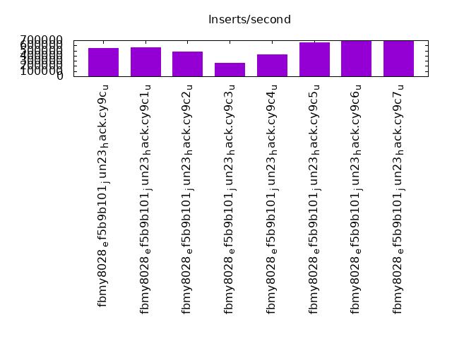
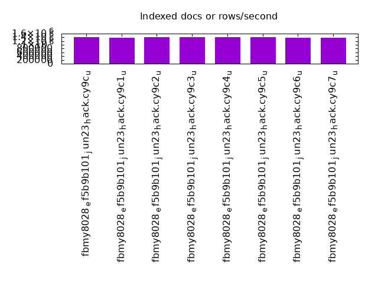
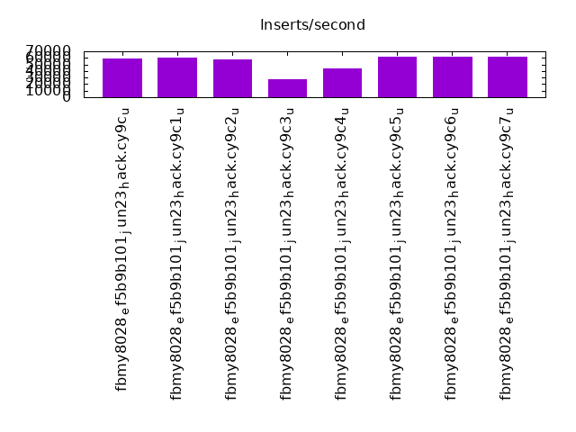
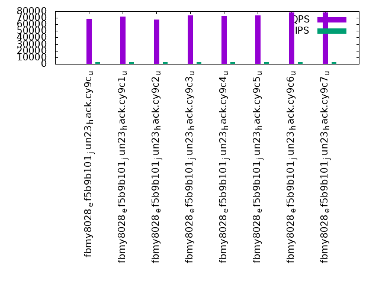
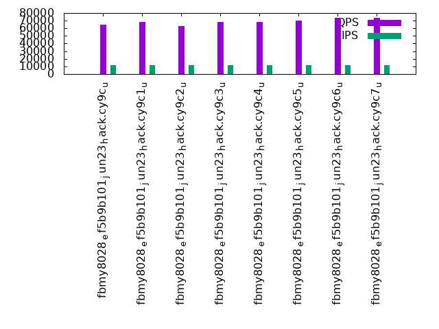
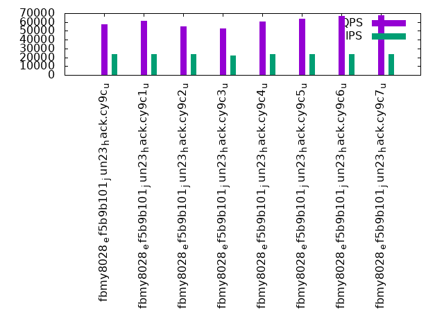

This is a report for the insert benchmark with 12000M docs and 24 client(s). It is generated by scripts (bash, awk, sed) and Tufte might not be impressed. An overview of the insert benchmark is here and a short update is here. Below, by DBMS, I mean DBMS+version.config. An example is my8020.c10b40 where my means MySQL, 8020 is version 8.0.20 and c10b40 is the name for the configuration file.
The test server has 80 cores with hyperthreads enabled, 256G RAM and fast storage. The benchmark was run with 24 client and there were 1 or 3 connections per client (1 for queries or inserts without rate limits, 1+1 for rate limited inserts+deletes). There are 24 tables, with a client per table. It loads 12000M rows without secondary indexes, creates secondary indexes, then inserts 1200M rows with a delete per insert to avoid growing the table. It then does 3 read+write tests for 3600s each that do queries as fast as possible with 100, 500 and then 1000 inserts/second/client concurrent with the queries and 1000 deletes/second to avoid growing the table. The database is larger than memory
The tested DBMS are:
The numbers are inserts/s for l.i0 and l.i1, indexed docs (or rows) /s for l.x and queries/s for q*.2. The values are the average rate over the entire test for inserts (IPS) and queries (QPS). The range of values for IPS and QPS is split into 3 parts: bottom 25%, middle 50%, top 25%. Values in the bottom 25% have a red background, values in the top 25% have a green background and values in the middle have no color. A gray background is used for values that can be ignored because the DBMS did not sustain the target insert rate. Red backgrounds are not used when the minimum value is within 80% of the max value.
| dbms | l.i0 | l.x | l.i1 | q100.1 | q500.1 | q1000.1 |
|---|---|---|---|---|---|---|
| fbmy8028_ef5b9b101_jun23_hack.cy9c_u | 542594 | 1404013 | 59291 | 68068 | 64585 | 57182 |
| fbmy8028_ef5b9b101_jun23_hack.cy9c1_u | 565904 | 1391477 | 60024 | 72145 | 68639 | 61609 |
| fbmy8028_ef5b9b101_jun23_hack.cy9c2_u | 480000 | 1402700 | 57471 | 67017 | 63342 | 55301 |
| fbmy8028_ef5b9b101_jun23_hack.cy9c3_u | 262916 | 1409620 | 26989 | 73308 | 68064 | 52809 |
| fbmy8028_ef5b9b101_jun23_hack.cy9c4_u | 431934 | 1401553 | 43356 | 73090 | 68150 | 60866 |
| fbmy8028_ef5b9b101_jun23_hack.cy9c5_u | 656347 | 1397961 | 61843 | 73840 | 69845 | 63865 |
| fbmy8028_ef5b9b101_jun23_hack.cy9c6_u | 694565 | 1385373 | 62183 | 78482 | 73566 | 67126 |
| fbmy8028_ef5b9b101_jun23_hack.cy9c7_u | 695572 | 1369093 | 62215 | 78516 | 73612 | 67722 |
This table has relative throughput, throughput for the DBMS relative to the DBMS in the first line, using the absolute throughput from the previous table. Values less than 0.95 have a yellow background. Values greater than 1.05 have a blue background.
| dbms | l.i0 | l.x | l.i1 | q100.1 | q500.1 | q1000.1 |
|---|---|---|---|---|---|---|
| fbmy8028_ef5b9b101_jun23_hack.cy9c_u | 1.00 | 1.00 | 1.00 | 1.00 | 1.00 | 1.00 |
| fbmy8028_ef5b9b101_jun23_hack.cy9c1_u | 1.04 | 0.99 | 1.01 | 1.06 | 1.06 | 1.08 |
| fbmy8028_ef5b9b101_jun23_hack.cy9c2_u | 0.88 | 1.00 | 0.97 | 0.98 | 0.98 | 0.97 |
| fbmy8028_ef5b9b101_jun23_hack.cy9c3_u | 0.48 | 1.00 | 0.46 | 1.08 | 1.05 | 0.92 |
| fbmy8028_ef5b9b101_jun23_hack.cy9c4_u | 0.80 | 1.00 | 0.73 | 1.07 | 1.06 | 1.06 |
| fbmy8028_ef5b9b101_jun23_hack.cy9c5_u | 1.21 | 1.00 | 1.04 | 1.08 | 1.08 | 1.12 |
| fbmy8028_ef5b9b101_jun23_hack.cy9c6_u | 1.28 | 0.99 | 1.05 | 1.15 | 1.14 | 1.17 |
| fbmy8028_ef5b9b101_jun23_hack.cy9c7_u | 1.28 | 0.98 | 1.05 | 1.15 | 1.14 | 1.18 |
This lists the average rate of inserts/s for the tests that do inserts concurrent with queries. For such tests the query rate is listed in the table above. The read+write tests are setup so that the insert rate should match the target rate every second. Cells that are not at least 95% of the target have a red background to indicate a failure to satisfy the target.
| dbms | q100.1 | q500.1 | q1000.1 |
|---|---|---|---|
| fbmy8028_ef5b9b101_jun23_hack.cy9c_u | 2381 | 11907 | 23828 |
| fbmy8028_ef5b9b101_jun23_hack.cy9c1_u | 2381 | 11907 | 23828 |
| fbmy8028_ef5b9b101_jun23_hack.cy9c2_u | 2381 | 11907 | 23828 |
| fbmy8028_ef5b9b101_jun23_hack.cy9c3_u | 2376 | 11881 | 22069 |
| fbmy8028_ef5b9b101_jun23_hack.cy9c4_u | 2374 | 11862 | 23613 |
| fbmy8028_ef5b9b101_jun23_hack.cy9c5_u | 2377 | 11881 | 23749 |
| fbmy8028_ef5b9b101_jun23_hack.cy9c6_u | 2376 | 11875 | 23743 |
| fbmy8028_ef5b9b101_jun23_hack.cy9c7_u | 2376 | 11878 | 23756 |
| target | 2400 | 12000 | 24000 |
l.i0: load without secondary indexes. Graphs for performance per 1-second interval are here.
Average throughput:
Insert response time histogram: each cell has the percentage of responses that take <= the time in the header and max is the max response time in seconds. For the max column values in the top 25% of the range have a red background and in the bottom 25% of the range have a green background. The red background is not used when the min value is within 80% of the max value.
| dbms | 256us | 1ms | 4ms | 16ms | 64ms | 256ms | 1s | 4s | 16s | gt | max |
|---|---|---|---|---|---|---|---|---|---|---|---|
| fbmy8028_ef5b9b101_jun23_hack.cy9c_u | 46.529 | 53.421 | 0.007 | 0.042 | nonzero | 0.339 | |||||
| fbmy8028_ef5b9b101_jun23_hack.cy9c1_u | 79.387 | 19.620 | 0.665 | 0.317 | 0.010 | 0.746 | |||||
| fbmy8028_ef5b9b101_jun23_hack.cy9c2_u | 30.556 | 69.395 | 0.007 | 0.041 | nonzero | 0.273 | |||||
| fbmy8028_ef5b9b101_jun23_hack.cy9c3_u | 78.894 | 14.216 | 2.289 | 4.599 | 0.002 | 0.414 | |||||
| fbmy8028_ef5b9b101_jun23_hack.cy9c4_u | 59.658 | 35.706 | 4.585 | 0.051 | nonzero | 0.284 | |||||
| fbmy8028_ef5b9b101_jun23_hack.cy9c5_u | 78.968 | 20.982 | 0.009 | 0.041 | nonzero | 0.264 | |||||
| fbmy8028_ef5b9b101_jun23_hack.cy9c6_u | 86.467 | 13.481 | 0.009 | 0.043 | 0.250 | ||||||
| fbmy8028_ef5b9b101_jun23_hack.cy9c7_u | 86.304 | 13.644 | 0.007 | 0.044 | nonzero | 0.275 |
Performance metrics for the DBMS listed above. Some are normalized by throughput, others are not. Legend for results is here.
ips qps rps rmbps wps wmbps rpq rkbpq wpi wkbpi csps cpups cspq cpupq dbgb1 dbgb2 rss maxop p50 p99 tag 542594 0 10 0.4 1876.6 119.4 0.000 0.001 0.003 0.225 363766 38.9 0.670 57 375.8 376.3 93.8 0.339 23574 13987 12000m.fbmy8028_ef5b9b101_jun23_hack.cy9c_u 565904 0 1 0.0 2099.5 136.7 0.000 0.000 0.004 0.247 107479 37.3 0.190 53 376.2 378.1 104.8 0.746 27272 400 12000m.fbmy8028_ef5b9b101_jun23_hack.cy9c1_u 480000 0 6 0.2 1626.0 103.5 0.000 0.000 0.003 0.221 431328 35.4 0.899 59 374.8 375.6 90.8 0.273 21079 10889 12000m.fbmy8028_ef5b9b101_jun23_hack.cy9c2_u 262916 0 5 0.2 1097.3 68.8 0.000 0.001 0.004 0.268 63004 17.7 0.240 54 374.9 375.3 118.8 0.414 1599 499 12000m.fbmy8028_ef5b9b101_jun23_hack.cy9c3_u 431934 0 12 0.4 1454.9 92.2 0.000 0.001 0.003 0.219 218353 28.4 0.506 53 375.0 375.9 89.8 0.284 20779 2497 12000m.fbmy8028_ef5b9b101_jun23_hack.cy9c4_u 656347 0 5 0.2 2309.0 148.2 0.000 0.000 0.004 0.231 210764 41.2 0.321 50 376.1 377.9 97.5 0.264 27572 21082 12000m.fbmy8028_ef5b9b101_jun23_hack.cy9c5_u 694565 0 11 0.4 2416.4 156.0 0.000 0.001 0.003 0.230 132319 40.8 0.191 47 376.3 377.9 98.3 0.250 29271 24476 12000m.fbmy8028_ef5b9b101_jun23_hack.cy9c6_u 695572 0 12 0.4 2409.9 156.9 0.000 0.001 0.003 0.231 132417 40.8 0.190 47 376.4 378.0 97.9 0.275 29071 24376 12000m.fbmy8028_ef5b9b101_jun23_hack.cy9c7_u
l.x: create secondary indexes.
Average throughput:
Performance metrics for the DBMS listed above. Some are normalized by throughput, others are not. Legend for results is here.
ips qps rps rmbps wps wmbps rpq rkbpq wpi wkbpi csps cpups cspq cpupq dbgb1 dbgb2 rss maxop p50 p99 tag 1404013 0 2574 146.8 1733.6 102.8 0.002 0.107 0.001 0.075 30896 29.8 0.022 17 771.3 771.8 185.3 0.003 NA NA 12000m.fbmy8028_ef5b9b101_jun23_hack.cy9c_u 1391477 0 2716 163.4 1733.0 101.5 0.002 0.120 0.001 0.075 30408 29.8 0.022 17 772.0 773.8 191.3 0.003 NA NA 12000m.fbmy8028_ef5b9b101_jun23_hack.cy9c1_u 1402700 0 2564 146.4 1734.5 99.4 0.002 0.107 0.001 0.073 31494 29.9 0.022 17 770.4 771.2 185.9 0.004 NA NA 12000m.fbmy8028_ef5b9b101_jun23_hack.cy9c2_u 1409620 0 2580 146.9 1755.0 105.9 0.002 0.107 0.001 0.077 30365 29.9 0.022 17 771.8 772.2 183.3 0.003 NA NA 12000m.fbmy8028_ef5b9b101_jun23_hack.cy9c3_u 1401553 0 2569 145.8 1737.5 100.4 0.002 0.107 0.001 0.073 30887 29.8 0.022 17 770.7 771.6 186.5 0.007 NA NA 12000m.fbmy8028_ef5b9b101_jun23_hack.cy9c4_u 1397961 0 2569 145.7 1744.5 102.6 0.002 0.107 0.001 0.075 30185 29.6 0.022 17 771.7 773.5 188.0 0.004 NA NA 12000m.fbmy8028_ef5b9b101_jun23_hack.cy9c5_u 1385373 0 2721 161.1 1725.8 100.0 0.002 0.119 0.001 0.074 32433 29.9 0.023 17 772.0 773.6 191.3 0.004 NA NA 12000m.fbmy8028_ef5b9b101_jun23_hack.cy9c6_u 1369093 0 2670 158.0 1706.9 98.2 0.002 0.118 0.001 0.073 31226 29.5 0.023 17 772.0 773.6 191.3 0.007 NA NA 12000m.fbmy8028_ef5b9b101_jun23_hack.cy9c7_u
l.i1: continue load after secondary indexes created. Graphs for performance per 1-second interval are here.
Average throughput:
Insert response time histogram: each cell has the percentage of responses that take <= the time in the header and max is the max response time in seconds. For the max column values in the top 25% of the range have a red background and in the bottom 25% of the range have a green background. The red background is not used when the min value is within 80% of the max value.
| dbms | 256us | 1ms | 4ms | 16ms | 64ms | 256ms | 1s | 4s | 16s | gt | max |
|---|---|---|---|---|---|---|---|---|---|---|---|
| fbmy8028_ef5b9b101_jun23_hack.cy9c_u | 0.026 | 17.099 | 82.285 | 0.485 | 0.104 | 0.001 | 1.169 | ||||
| fbmy8028_ef5b9b101_jun23_hack.cy9c1_u | 0.029 | 20.371 | 79.001 | 0.452 | 0.145 | 0.002 | 1.516 | ||||
| fbmy8028_ef5b9b101_jun23_hack.cy9c2_u | 0.030 | 15.196 | 84.013 | 0.605 | 0.156 | nonzero | 1.120 | ||||
| fbmy8028_ef5b9b101_jun23_hack.cy9c3_u | 0.029 | 14.678 | 71.485 | 10.580 | 3.226 | 0.001 | 1.149 | ||||
| fbmy8028_ef5b9b101_jun23_hack.cy9c4_u | 0.015 | 15.212 | 78.193 | 6.506 | 0.064 | 0.008 | 0.001 | 9.545 | |||
| fbmy8028_ef5b9b101_jun23_hack.cy9c5_u | 0.026 | 17.647 | 82.310 | 0.016 | 0.184 | ||||||
| fbmy8028_ef5b9b101_jun23_hack.cy9c6_u | 0.028 | 18.258 | 81.699 | 0.015 | 0.155 | ||||||
| fbmy8028_ef5b9b101_jun23_hack.cy9c7_u | 0.028 | 18.402 | 81.556 | 0.015 | 0.207 |
Delete response time histogram: each cell has the percentage of responses that take <= the time in the header and max is the max response time in seconds. For the max column values in the top 25% of the range have a red background and in the bottom 25% of the range have a green background. The red background is not used when the min value is within 80% of the max value.
| dbms | 256us | 1ms | 4ms | 16ms | 64ms | 256ms | 1s | 4s | 16s | gt | max |
|---|---|---|---|---|---|---|---|---|---|---|---|
| fbmy8028_ef5b9b101_jun23_hack.cy9c_u | 0.027 | 16.768 | 82.613 | 0.487 | 0.105 | 0.001 | 1.169 | ||||
| fbmy8028_ef5b9b101_jun23_hack.cy9c1_u | 0.030 | 19.806 | 79.562 | 0.455 | 0.145 | 0.002 | 1.516 | ||||
| fbmy8028_ef5b9b101_jun23_hack.cy9c2_u | 0.030 | 15.044 | 84.162 | 0.607 | 0.156 | nonzero | 1.120 | ||||
| fbmy8028_ef5b9b101_jun23_hack.cy9c3_u | 0.029 | 14.098 | 72.059 | 10.586 | 3.227 | 0.001 | 1.149 | ||||
| fbmy8028_ef5b9b101_jun23_hack.cy9c4_u | 0.015 | 14.929 | 78.465 | 6.517 | 0.064 | 0.009 | 0.001 | 9.545 | |||
| fbmy8028_ef5b9b101_jun23_hack.cy9c5_u | 0.027 | 17.146 | 82.809 | 0.017 | 0.245 | ||||||
| fbmy8028_ef5b9b101_jun23_hack.cy9c6_u | 0.029 | 17.665 | 82.290 | 0.016 | 0.156 | ||||||
| fbmy8028_ef5b9b101_jun23_hack.cy9c7_u | 0.028 | 17.713 | 82.243 | 0.016 | 0.208 |
Performance metrics for the DBMS listed above. Some are normalized by throughput, others are not. Legend for results is here.
ips qps rps rmbps wps wmbps rpq rkbpq wpi wkbpi csps cpups cspq cpupq dbgb1 dbgb2 rss maxop p50 p99 tag 59291 0 646 14.6 1611.9 101.0 0.011 0.253 0.027 1.745 160810 19.2 2.712 259 851.1 852.4 180.1 1.169 2597 150 12000m.fbmy8028_ef5b9b101_jun23_hack.cy9c_u 60024 0 677 17.8 1648.8 103.3 0.011 0.304 0.027 1.761 75379 17.4 1.256 232 844.2 845.2 185.7 1.516 2647 100 12000m.fbmy8028_ef5b9b101_jun23_hack.cy9c1_u 57471 0 620 14.1 1540.3 98.0 0.011 0.251 0.027 1.746 243540 20.1 4.238 280 849.5 851.2 180.5 1.120 2597 100 12000m.fbmy8028_ef5b9b101_jun23_hack.cy9c2_u 26989 0 341 6.9 832.3 49.8 0.013 0.262 0.031 1.888 51680 9.2 1.915 273 846.6 847.8 178.4 1.149 500 50 12000m.fbmy8028_ef5b9b101_jun23_hack.cy9c3_u 43356 0 570 11.7 1303.5 75.2 0.013 0.276 0.030 1.776 106159 14.0 2.449 258 844.6 846.3 180.6 9.545 2197 100 12000m.fbmy8028_ef5b9b101_jun23_hack.cy9c4_u 61843 0 768 15.7 1848.6 107.8 0.012 0.259 0.030 1.784 118145 19.0 1.910 246 843.4 844.2 182.1 0.184 2597 1998 12000m.fbmy8028_ef5b9b101_jun23_hack.cy9c5_u 62183 0 778 18.0 1857.8 105.7 0.013 0.297 0.030 1.741 79118 18.1 1.272 233 844.8 845.5 185.5 0.155 2598 1998 12000m.fbmy8028_ef5b9b101_jun23_hack.cy9c6_u 62215 0 798 18.3 1862.9 107.6 0.013 0.301 0.030 1.772 79203 18.2 1.273 234 845.7 846.4 185.4 0.207 2647 1948 12000m.fbmy8028_ef5b9b101_jun23_hack.cy9c7_u
q100.1: range queries with 100 insert/s per client. Graphs for performance per 1-second interval are here.
Average throughput:
Query response time histogram: each cell has the percentage of responses that take <= the time in the header and max is the max response time in seconds. For max values in the top 25% of the range have a red background and in the bottom 25% of the range have a green background. The red background is not used when the min value is within 80% of the max value.
| dbms | 256us | 1ms | 4ms | 16ms | 64ms | 256ms | 1s | 4s | 16s | gt | max |
|---|---|---|---|---|---|---|---|---|---|---|---|
| fbmy8028_ef5b9b101_jun23_hack.cy9c_u | 29.762 | 69.665 | 0.567 | 0.005 | nonzero | 0.001 | nonzero | 0.257 | |||
| fbmy8028_ef5b9b101_jun23_hack.cy9c1_u | 40.338 | 59.215 | 0.442 | 0.005 | nonzero | nonzero | 0.093 | ||||
| fbmy8028_ef5b9b101_jun23_hack.cy9c2_u | 26.909 | 72.512 | 0.573 | 0.005 | nonzero | nonzero | nonzero | 0.304 | |||
| fbmy8028_ef5b9b101_jun23_hack.cy9c3_u | 28.035 | 71.886 | 0.070 | 0.004 | 0.005 | nonzero | 0.082 | ||||
| fbmy8028_ef5b9b101_jun23_hack.cy9c4_u | 28.465 | 71.472 | 0.053 | 0.002 | 0.007 | 0.001 | 0.083 | ||||
| fbmy8028_ef5b9b101_jun23_hack.cy9c5_u | 29.108 | 70.796 | 0.087 | 0.007 | 0.002 | nonzero | 0.073 | ||||
| fbmy8028_ef5b9b101_jun23_hack.cy9c6_u | 39.865 | 60.035 | 0.092 | 0.007 | 0.001 | 0.046 | |||||
| fbmy8028_ef5b9b101_jun23_hack.cy9c7_u | 39.582 | 60.329 | 0.081 | 0.007 | 0.001 | 0.024 |
Insert response time histogram: each cell has the percentage of responses that take <= the time in the header and max is the max response time in seconds. For max values in the top 25% of the range have a red background and in the bottom 25% of the range have a green background. The red background is not used when the min value is within 80% of the max value.
| dbms | 256us | 1ms | 4ms | 16ms | 64ms | 256ms | 1s | 4s | 16s | gt | max |
|---|---|---|---|---|---|---|---|---|---|---|---|
| fbmy8028_ef5b9b101_jun23_hack.cy9c_u | 99.078 | 0.919 | 0.003 | 0.001 | 0.080 | ||||||
| fbmy8028_ef5b9b101_jun23_hack.cy9c1_u | 99.793 | 0.205 | 0.001 | 0.018 | |||||||
| fbmy8028_ef5b9b101_jun23_hack.cy9c2_u | 99.802 | 0.171 | 0.006 | 0.017 | 0.003 | 0.301 | |||||
| fbmy8028_ef5b9b101_jun23_hack.cy9c3_u | 99.677 | 0.238 | 0.085 | 0.049 | |||||||
| fbmy8028_ef5b9b101_jun23_hack.cy9c4_u | 99.678 | 0.201 | 0.120 | 0.001 | 0.078 | ||||||
| fbmy8028_ef5b9b101_jun23_hack.cy9c5_u | 99.733 | 0.237 | 0.031 | 0.047 | |||||||
| fbmy8028_ef5b9b101_jun23_hack.cy9c6_u | 99.770 | 0.202 | 0.028 | 0.025 | |||||||
| fbmy8028_ef5b9b101_jun23_hack.cy9c7_u | 99.734 | 0.227 | 0.038 | 0.021 |
Delete response time histogram: each cell has the percentage of responses that take <= the time in the header and max is the max response time in seconds. For max values in the top 25% of the range have a red background and in the bottom 25% of the range have a green background. The red background is not used when the min value is within 80% of the max value.
| dbms | 256us | 1ms | 4ms | 16ms | 64ms | 256ms | 1s | 4s | 16s | gt | max |
|---|---|---|---|---|---|---|---|---|---|---|---|
| fbmy8028_ef5b9b101_jun23_hack.cy9c_u | 99.359 | 0.634 | 0.006 | 0.001 | 0.081 | ||||||
| fbmy8028_ef5b9b101_jun23_hack.cy9c1_u | 99.861 | 0.138 | 0.001 | 0.025 | |||||||
| fbmy8028_ef5b9b101_jun23_hack.cy9c2_u | 99.828 | 0.127 | 0.011 | 0.032 | 0.002 | 0.305 | |||||
| fbmy8028_ef5b9b101_jun23_hack.cy9c3_u | 99.656 | 0.248 | 0.094 | 0.003 | 0.080 | ||||||
| fbmy8028_ef5b9b101_jun23_hack.cy9c4_u | 99.646 | 0.217 | 0.134 | 0.002 | 0.081 | ||||||
| fbmy8028_ef5b9b101_jun23_hack.cy9c5_u | 99.743 | 0.222 | 0.035 | 0.047 | |||||||
| fbmy8028_ef5b9b101_jun23_hack.cy9c6_u | 99.762 | 0.210 | 0.028 | 0.028 | |||||||
| fbmy8028_ef5b9b101_jun23_hack.cy9c7_u | 99.741 | 0.223 | 0.036 | 0.021 |
Performance metrics for the DBMS listed above. Some are normalized by throughput, others are not. Legend for results is here.
ips qps rps rmbps wps wmbps rpq rkbpq wpi wkbpi csps cpups cspq cpupq dbgb1 dbgb2 rss maxop p50 p99 tag 2381 68068 4873 46.3 153.2 8.8 0.072 0.696 0.064 3.768 289164 31.8 4.248 374 841.6 842.8 184.7 0.257 3133 1886 12000m.fbmy8028_ef5b9b101_jun23_hack.cy9c_u 2381 72145 4458 42.6 149.5 8.3 0.062 0.604 0.063 3.590 304606 31.9 4.222 354 841.7 842.4 186.5 0.093 3182 1918 12000m.fbmy8028_ef5b9b101_jun23_hack.cy9c1_u 2381 67017 4918 46.6 154.8 8.6 0.073 0.713 0.065 3.680 286762 31.8 4.279 380 841.7 843.2 184.7 0.304 3021 1855 12000m.fbmy8028_ef5b9b101_jun23_hack.cy9c2_u 2376 73308 2686 25.8 114.4 6.2 0.037 0.360 0.048 2.665 306675 31.9 4.183 348 841.2 842.3 182.6 0.082 3100 2126 12000m.fbmy8028_ef5b9b101_jun23_hack.cy9c3_u 2374 73090 2761 26.0 98.9 5.2 0.038 0.365 0.042 2.260 306235 31.8 4.190 348 840.6 842.2 183.3 0.083 3054 2046 12000m.fbmy8028_ef5b9b101_jun23_hack.cy9c4_u 2377 73840 2708 25.8 111.5 6.0 0.037 0.358 0.047 2.601 308701 32.0 4.181 347 839.3 839.9 182.8 0.073 3181 1998 12000m.fbmy8028_ef5b9b101_jun23_hack.cy9c5_u 2376 78482 2857 27.1 113.1 5.6 0.036 0.353 0.048 2.431 326504 31.8 4.160 324 840.6 841.1 185.6 0.046 3388 2206 12000m.fbmy8028_ef5b9b101_jun23_hack.cy9c6_u 2376 78516 2728 26.3 112.0 5.8 0.035 0.344 0.047 2.487 326601 31.9 4.160 325 840.6 841.1 185.6 0.024 3276 2046 12000m.fbmy8028_ef5b9b101_jun23_hack.cy9c7_u
q500.1: range queries with 500 insert/s per client. Graphs for performance per 1-second interval are here.
Average throughput:
Query response time histogram: each cell has the percentage of responses that take <= the time in the header and max is the max response time in seconds. For max values in the top 25% of the range have a red background and in the bottom 25% of the range have a green background. The red background is not used when the min value is within 80% of the max value.
| dbms | 256us | 1ms | 4ms | 16ms | 64ms | 256ms | 1s | 4s | 16s | gt | max |
|---|---|---|---|---|---|---|---|---|---|---|---|
| fbmy8028_ef5b9b101_jun23_hack.cy9c_u | 16.460 | 83.499 | 0.024 | 0.016 | nonzero | 0.061 | |||||
| fbmy8028_ef5b9b101_jun23_hack.cy9c1_u | 27.503 | 72.458 | 0.022 | 0.018 | nonzero | 0.049 | |||||
| fbmy8028_ef5b9b101_jun23_hack.cy9c2_u | 12.884 | 87.075 | 0.025 | 0.016 | nonzero | 0.047 | |||||
| fbmy8028_ef5b9b101_jun23_hack.cy9c3_u | 16.421 | 83.509 | 0.038 | 0.010 | 0.022 | 0.051 | |||||
| fbmy8028_ef5b9b101_jun23_hack.cy9c4_u | 18.312 | 81.615 | 0.033 | 0.012 | 0.028 | nonzero | 0.106 | ||||
| fbmy8028_ef5b9b101_jun23_hack.cy9c5_u | 20.601 | 79.323 | 0.043 | 0.025 | 0.008 | 0.048 | |||||
| fbmy8028_ef5b9b101_jun23_hack.cy9c6_u | 29.227 | 70.703 | 0.040 | 0.023 | 0.007 | 0.045 | |||||
| fbmy8028_ef5b9b101_jun23_hack.cy9c7_u | 29.175 | 70.751 | 0.041 | 0.023 | 0.009 | 0.038 |
Insert response time histogram: each cell has the percentage of responses that take <= the time in the header and max is the max response time in seconds. For max values in the top 25% of the range have a red background and in the bottom 25% of the range have a green background. The red background is not used when the min value is within 80% of the max value.
| dbms | 256us | 1ms | 4ms | 16ms | 64ms | 256ms | 1s | 4s | 16s | gt | max |
|---|---|---|---|---|---|---|---|---|---|---|---|
| fbmy8028_ef5b9b101_jun23_hack.cy9c_u | 50.965 | 48.988 | 0.047 | 0.037 | |||||||
| fbmy8028_ef5b9b101_jun23_hack.cy9c1_u | 44.485 | 55.477 | 0.037 | 0.001 | 0.093 | ||||||
| fbmy8028_ef5b9b101_jun23_hack.cy9c2_u | 31.115 | 67.797 | 1.087 | 0.036 | |||||||
| fbmy8028_ef5b9b101_jun23_hack.cy9c3_u | 97.085 | 2.699 | 0.216 | 0.052 | |||||||
| fbmy8028_ef5b9b101_jun23_hack.cy9c4_u | 99.360 | 0.396 | 0.241 | 0.003 | 0.100 | ||||||
| fbmy8028_ef5b9b101_jun23_hack.cy9c5_u | 95.902 | 3.934 | 0.164 | 0.032 | |||||||
| fbmy8028_ef5b9b101_jun23_hack.cy9c6_u | 99.612 | 0.281 | 0.106 | 0.030 | |||||||
| fbmy8028_ef5b9b101_jun23_hack.cy9c7_u | 98.056 | 1.786 | 0.158 | 0.041 |
Delete response time histogram: each cell has the percentage of responses that take <= the time in the header and max is the max response time in seconds. For max values in the top 25% of the range have a red background and in the bottom 25% of the range have a green background. The red background is not used when the min value is within 80% of the max value.
| dbms | 256us | 1ms | 4ms | 16ms | 64ms | 256ms | 1s | 4s | 16s | gt | max |
|---|---|---|---|---|---|---|---|---|---|---|---|
| fbmy8028_ef5b9b101_jun23_hack.cy9c_u | 53.705 | 46.245 | 0.049 | nonzero | 0.074 | ||||||
| fbmy8028_ef5b9b101_jun23_hack.cy9c1_u | 47.411 | 52.549 | 0.039 | 0.001 | 0.093 | ||||||
| fbmy8028_ef5b9b101_jun23_hack.cy9c2_u | 33.168 | 65.782 | 1.050 | 0.063 | |||||||
| fbmy8028_ef5b9b101_jun23_hack.cy9c3_u | 96.852 | 2.921 | 0.227 | 0.052 | |||||||
| fbmy8028_ef5b9b101_jun23_hack.cy9c4_u | 99.301 | 0.444 | 0.253 | 0.002 | 0.102 | ||||||
| fbmy8028_ef5b9b101_jun23_hack.cy9c5_u | 95.922 | 3.915 | 0.163 | 0.033 | |||||||
| fbmy8028_ef5b9b101_jun23_hack.cy9c6_u | 99.614 | 0.277 | 0.108 | 0.032 | |||||||
| fbmy8028_ef5b9b101_jun23_hack.cy9c7_u | 98.146 | 1.689 | 0.165 | 0.041 |
Performance metrics for the DBMS listed above. Some are normalized by throughput, others are not. Legend for results is here.
ips qps rps rmbps wps wmbps rpq rkbpq wpi wkbpi csps cpups cspq cpupq dbgb1 dbgb2 rss maxop p50 p99 tag 11907 64585 1661 21.3 428.3 24.2 0.026 0.338 0.036 2.077 275265 34.4 4.262 426 842.6 843.0 186.6 0.061 2878 2525 12000m.fbmy8028_ef5b9b101_jun23_hack.cy9c_u 11907 68639 1501 20.6 427.1 23.6 0.022 0.307 0.036 2.027 290322 34.2 4.230 399 842.5 844.6 188.6 0.049 3053 2669 12000m.fbmy8028_ef5b9b101_jun23_hack.cy9c1_u 11907 63342 1496 19.9 425.0 23.1 0.024 0.322 0.036 1.990 275113 34.5 4.343 436 843.8 844.5 186.7 0.047 2797 2446 12000m.fbmy8028_ef5b9b101_jun23_hack.cy9c2_u 11881 68064 403 9.8 402.7 21.9 0.006 0.148 0.034 1.884 287792 34.1 4.228 401 842.6 842.9 186.0 0.051 2877 2174 12000m.fbmy8028_ef5b9b101_jun23_hack.cy9c3_u 11862 68150 375 10.3 431.5 23.2 0.006 0.155 0.036 2.006 287877 34.0 4.224 399 841.4 842.3 186.2 0.106 2861 2078 12000m.fbmy8028_ef5b9b101_jun23_hack.cy9c4_u 11881 69845 350 8.4 390.2 21.4 0.005 0.124 0.033 1.848 294383 34.0 4.215 389 842.0 843.9 186.0 0.048 2989 2222 12000m.fbmy8028_ef5b9b101_jun23_hack.cy9c5_u 11875 73566 452 10.1 417.7 22.1 0.006 0.141 0.035 1.910 308436 34.2 4.193 372 841.6 843.4 188.1 0.045 3165 2318 12000m.fbmy8028_ef5b9b101_jun23_hack.cy9c6_u 11878 73612 429 10.0 407.1 22.4 0.006 0.139 0.034 1.935 308845 34.1 4.196 371 842.0 843.8 188.4 0.038 3069 2270 12000m.fbmy8028_ef5b9b101_jun23_hack.cy9c7_u
q1000.1: range queries with 1000 insert/s per client. Graphs for performance per 1-second interval are here.
Average throughput:
Query response time histogram: each cell has the percentage of responses that take <= the time in the header and max is the max response time in seconds. For max values in the top 25% of the range have a red background and in the bottom 25% of the range have a green background. The red background is not used when the min value is within 80% of the max value.
| dbms | 256us | 1ms | 4ms | 16ms | 64ms | 256ms | 1s | 4s | 16s | gt | max |
|---|---|---|---|---|---|---|---|---|---|---|---|
| fbmy8028_ef5b9b101_jun23_hack.cy9c_u | 3.414 | 96.432 | 0.116 | 0.038 | nonzero | nonzero | 0.135 | ||||
| fbmy8028_ef5b9b101_jun23_hack.cy9c1_u | 11.559 | 88.329 | 0.072 | 0.040 | nonzero | nonzero | 0.109 | ||||
| fbmy8028_ef5b9b101_jun23_hack.cy9c2_u | 1.837 | 97.923 | 0.199 | 0.040 | nonzero | nonzero | 0.069 | ||||
| fbmy8028_ef5b9b101_jun23_hack.cy9c3_u | 0.204 | 99.675 | 0.069 | 0.013 | 0.040 | nonzero | 0.084 | ||||
| fbmy8028_ef5b9b101_jun23_hack.cy9c4_u | 6.151 | 93.740 | 0.036 | 0.029 | 0.043 | 0.001 | 0.120 | ||||
| fbmy8028_ef5b9b101_jun23_hack.cy9c5_u | 10.172 | 89.739 | 0.050 | 0.014 | 0.025 | nonzero | 0.068 | ||||
| fbmy8028_ef5b9b101_jun23_hack.cy9c6_u | 17.163 | 82.751 | 0.049 | 0.014 | 0.023 | nonzero | 0.070 | ||||
| fbmy8028_ef5b9b101_jun23_hack.cy9c7_u | 18.357 | 81.560 | 0.045 | 0.011 | 0.027 | nonzero | 0.097 |
Insert response time histogram: each cell has the percentage of responses that take <= the time in the header and max is the max response time in seconds. For max values in the top 25% of the range have a red background and in the bottom 25% of the range have a green background. The red background is not used when the min value is within 80% of the max value.
| dbms | 256us | 1ms | 4ms | 16ms | 64ms | 256ms | 1s | 4s | 16s | gt | max |
|---|---|---|---|---|---|---|---|---|---|---|---|
| fbmy8028_ef5b9b101_jun23_hack.cy9c_u | 4.425 | 26.591 | 68.985 | 0.061 | |||||||
| fbmy8028_ef5b9b101_jun23_hack.cy9c1_u | 6.733 | 42.209 | 51.057 | 0.001 | 0.080 | ||||||
| fbmy8028_ef5b9b101_jun23_hack.cy9c2_u | 4.679 | 21.764 | 73.554 | 0.003 | 0.101 | ||||||
| fbmy8028_ef5b9b101_jun23_hack.cy9c3_u | 23.068 | 36.724 | 35.111 | 4.895 | 0.202 | 0.379 | |||||
| fbmy8028_ef5b9b101_jun23_hack.cy9c4_u | 23.444 | 59.068 | 16.851 | 0.617 | 0.013 | 0.007 | 1.854 | ||||
| fbmy8028_ef5b9b101_jun23_hack.cy9c5_u | 23.382 | 75.981 | 0.635 | 0.002 | 0.076 | ||||||
| fbmy8028_ef5b9b101_jun23_hack.cy9c6_u | 14.495 | 80.315 | 5.188 | 0.002 | 0.091 | ||||||
| fbmy8028_ef5b9b101_jun23_hack.cy9c7_u | 27.100 | 71.411 | 1.484 | 0.006 | 0.112 |
Delete response time histogram: each cell has the percentage of responses that take <= the time in the header and max is the max response time in seconds. For max values in the top 25% of the range have a red background and in the bottom 25% of the range have a green background. The red background is not used when the min value is within 80% of the max value.
| dbms | 256us | 1ms | 4ms | 16ms | 64ms | 256ms | 1s | 4s | 16s | gt | max |
|---|---|---|---|---|---|---|---|---|---|---|---|
| fbmy8028_ef5b9b101_jun23_hack.cy9c_u | 4.539 | 26.483 | 68.978 | nonzero | 0.123 | ||||||
| fbmy8028_ef5b9b101_jun23_hack.cy9c1_u | 6.840 | 42.092 | 51.066 | 0.002 | 0.132 | ||||||
| fbmy8028_ef5b9b101_jun23_hack.cy9c2_u | 4.781 | 21.734 | 73.482 | 0.003 | 0.189 | ||||||
| fbmy8028_ef5b9b101_jun23_hack.cy9c3_u | 22.492 | 37.154 | 35.254 | 4.898 | 0.201 | 0.379 | |||||
| fbmy8028_ef5b9b101_jun23_hack.cy9c4_u | 22.948 | 59.466 | 16.947 | 0.619 | 0.013 | 0.007 | 2.053 | ||||
| fbmy8028_ef5b9b101_jun23_hack.cy9c5_u | 23.186 | 76.168 | 0.644 | 0.002 | 0.076 | ||||||
| fbmy8028_ef5b9b101_jun23_hack.cy9c6_u | 14.214 | 80.574 | 5.209 | 0.003 | 0.091 | ||||||
| fbmy8028_ef5b9b101_jun23_hack.cy9c7_u | 26.655 | 71.841 | 1.497 | 0.006 | 0.112 |
Performance metrics for the DBMS listed above. Some are normalized by throughput, others are not. Legend for results is here.
ips qps rps rmbps wps wmbps rpq rkbpq wpi wkbpi csps cpups cspq cpupq dbgb1 dbgb2 rss maxop p50 p99 tag 23828 57182 2680 36.9 832.9 48.5 0.047 0.661 0.035 2.085 270808 38.7 4.736 541 844.0 844.9 187.5 0.135 2478 2142 12000m.fbmy8028_ef5b9b101_jun23_hack.cy9c_u 23828 61609 2514 36.8 832.0 41.6 0.041 0.612 0.035 1.787 276036 38.1 4.480 495 844.6 845.1 189.1 0.109 2717 2318 12000m.fbmy8028_ef5b9b101_jun23_hack.cy9c1_u 23828 55301 2519 36.9 835.4 40.8 0.046 0.683 0.035 1.753 290231 39.2 5.248 567 844.5 845.8 187.5 0.069 2414 2078 12000m.fbmy8028_ef5b9b101_jun23_hack.cy9c2_u 22069 52809 597 13.2 753.4 40.1 0.011 0.257 0.034 1.862 242518 37.6 4.592 570 843.9 844.8 187.4 0.084 2206 1423 12000m.fbmy8028_ef5b9b101_jun23_hack.cy9c3_u 23613 60866 580 14.3 811.0 42.7 0.010 0.240 0.034 1.853 275919 37.3 4.533 490 844.1 845.4 187.2 0.120 2573 1518 12000m.fbmy8028_ef5b9b101_jun23_hack.cy9c4_u 23749 63865 619 13.9 805.2 43.8 0.010 0.223 0.034 1.888 283443 37.5 4.438 470 843.0 843.5 187.1 0.068 2701 1774 12000m.fbmy8028_ef5b9b101_jun23_hack.cy9c5_u 23743 67126 734 15.0 795.5 40.7 0.011 0.229 0.034 1.754 295396 37.5 4.401 447 845.1 845.3 189.0 0.070 2845 1982 12000m.fbmy8028_ef5b9b101_jun23_hack.cy9c6_u 23756 67722 738 15.9 814.2 43.2 0.011 0.241 0.034 1.862 297252 37.4 4.389 442 843.1 843.4 189.2 0.097 2845 1918 12000m.fbmy8028_ef5b9b101_jun23_hack.cy9c7_u
l.i0: load without secondary indexes
Performance metrics for all DBMS, not just the ones listed above. Some are normalized by throughput, others are not. Legend for results is here.
ips qps rps rmbps wps wmbps rpq rkbpq wpi wkbpi csps cpups cspq cpupq dbgb1 dbgb2 rss maxop p50 p99 tag 542594 0 10 0.4 1876.6 119.4 0.000 0.001 0.003 0.225 363766 38.9 0.670 57 375.8 376.3 93.8 0.339 23574 13987 12000m.fbmy8028_ef5b9b101_jun23_hack.cy9c_u 565904 0 1 0.0 2099.5 136.7 0.000 0.000 0.004 0.247 107479 37.3 0.190 53 376.2 378.1 104.8 0.746 27272 400 12000m.fbmy8028_ef5b9b101_jun23_hack.cy9c1_u 480000 0 6 0.2 1626.0 103.5 0.000 0.000 0.003 0.221 431328 35.4 0.899 59 374.8 375.6 90.8 0.273 21079 10889 12000m.fbmy8028_ef5b9b101_jun23_hack.cy9c2_u 262916 0 5 0.2 1097.3 68.8 0.000 0.001 0.004 0.268 63004 17.7 0.240 54 374.9 375.3 118.8 0.414 1599 499 12000m.fbmy8028_ef5b9b101_jun23_hack.cy9c3_u 431934 0 12 0.4 1454.9 92.2 0.000 0.001 0.003 0.219 218353 28.4 0.506 53 375.0 375.9 89.8 0.284 20779 2497 12000m.fbmy8028_ef5b9b101_jun23_hack.cy9c4_u 656347 0 5 0.2 2309.0 148.2 0.000 0.000 0.004 0.231 210764 41.2 0.321 50 376.1 377.9 97.5 0.264 27572 21082 12000m.fbmy8028_ef5b9b101_jun23_hack.cy9c5_u 694565 0 11 0.4 2416.4 156.0 0.000 0.001 0.003 0.230 132319 40.8 0.191 47 376.3 377.9 98.3 0.250 29271 24476 12000m.fbmy8028_ef5b9b101_jun23_hack.cy9c6_u 695572 0 12 0.4 2409.9 156.9 0.000 0.001 0.003 0.231 132417 40.8 0.190 47 376.4 378.0 97.9 0.275 29071 24376 12000m.fbmy8028_ef5b9b101_jun23_hack.cy9c7_u
l.x: create secondary indexes
Performance metrics for all DBMS, not just the ones listed above. Some are normalized by throughput, others are not. Legend for results is here.
ips qps rps rmbps wps wmbps rpq rkbpq wpi wkbpi csps cpups cspq cpupq dbgb1 dbgb2 rss maxop p50 p99 tag 1404013 0 2574 146.8 1733.6 102.8 0.002 0.107 0.001 0.075 30896 29.8 0.022 17 771.3 771.8 185.3 0.003 NA NA 12000m.fbmy8028_ef5b9b101_jun23_hack.cy9c_u 1391477 0 2716 163.4 1733.0 101.5 0.002 0.120 0.001 0.075 30408 29.8 0.022 17 772.0 773.8 191.3 0.003 NA NA 12000m.fbmy8028_ef5b9b101_jun23_hack.cy9c1_u 1402700 0 2564 146.4 1734.5 99.4 0.002 0.107 0.001 0.073 31494 29.9 0.022 17 770.4 771.2 185.9 0.004 NA NA 12000m.fbmy8028_ef5b9b101_jun23_hack.cy9c2_u 1409620 0 2580 146.9 1755.0 105.9 0.002 0.107 0.001 0.077 30365 29.9 0.022 17 771.8 772.2 183.3 0.003 NA NA 12000m.fbmy8028_ef5b9b101_jun23_hack.cy9c3_u 1401553 0 2569 145.8 1737.5 100.4 0.002 0.107 0.001 0.073 30887 29.8 0.022 17 770.7 771.6 186.5 0.007 NA NA 12000m.fbmy8028_ef5b9b101_jun23_hack.cy9c4_u 1397961 0 2569 145.7 1744.5 102.6 0.002 0.107 0.001 0.075 30185 29.6 0.022 17 771.7 773.5 188.0 0.004 NA NA 12000m.fbmy8028_ef5b9b101_jun23_hack.cy9c5_u 1385373 0 2721 161.1 1725.8 100.0 0.002 0.119 0.001 0.074 32433 29.9 0.023 17 772.0 773.6 191.3 0.004 NA NA 12000m.fbmy8028_ef5b9b101_jun23_hack.cy9c6_u 1369093 0 2670 158.0 1706.9 98.2 0.002 0.118 0.001 0.073 31226 29.5 0.023 17 772.0 773.6 191.3 0.007 NA NA 12000m.fbmy8028_ef5b9b101_jun23_hack.cy9c7_u
l.i1: continue load after secondary indexes created
Performance metrics for all DBMS, not just the ones listed above. Some are normalized by throughput, others are not. Legend for results is here.
ips qps rps rmbps wps wmbps rpq rkbpq wpi wkbpi csps cpups cspq cpupq dbgb1 dbgb2 rss maxop p50 p99 tag 59291 0 646 14.6 1611.9 101.0 0.011 0.253 0.027 1.745 160810 19.2 2.712 259 851.1 852.4 180.1 1.169 2597 150 12000m.fbmy8028_ef5b9b101_jun23_hack.cy9c_u 60024 0 677 17.8 1648.8 103.3 0.011 0.304 0.027 1.761 75379 17.4 1.256 232 844.2 845.2 185.7 1.516 2647 100 12000m.fbmy8028_ef5b9b101_jun23_hack.cy9c1_u 57471 0 620 14.1 1540.3 98.0 0.011 0.251 0.027 1.746 243540 20.1 4.238 280 849.5 851.2 180.5 1.120 2597 100 12000m.fbmy8028_ef5b9b101_jun23_hack.cy9c2_u 26989 0 341 6.9 832.3 49.8 0.013 0.262 0.031 1.888 51680 9.2 1.915 273 846.6 847.8 178.4 1.149 500 50 12000m.fbmy8028_ef5b9b101_jun23_hack.cy9c3_u 43356 0 570 11.7 1303.5 75.2 0.013 0.276 0.030 1.776 106159 14.0 2.449 258 844.6 846.3 180.6 9.545 2197 100 12000m.fbmy8028_ef5b9b101_jun23_hack.cy9c4_u 61843 0 768 15.7 1848.6 107.8 0.012 0.259 0.030 1.784 118145 19.0 1.910 246 843.4 844.2 182.1 0.184 2597 1998 12000m.fbmy8028_ef5b9b101_jun23_hack.cy9c5_u 62183 0 778 18.0 1857.8 105.7 0.013 0.297 0.030 1.741 79118 18.1 1.272 233 844.8 845.5 185.5 0.155 2598 1998 12000m.fbmy8028_ef5b9b101_jun23_hack.cy9c6_u 62215 0 798 18.3 1862.9 107.6 0.013 0.301 0.030 1.772 79203 18.2 1.273 234 845.7 846.4 185.4 0.207 2647 1948 12000m.fbmy8028_ef5b9b101_jun23_hack.cy9c7_u
q100.1: range queries with 100 insert/s per client
Performance metrics for all DBMS, not just the ones listed above. Some are normalized by throughput, others are not. Legend for results is here.
ips qps rps rmbps wps wmbps rpq rkbpq wpi wkbpi csps cpups cspq cpupq dbgb1 dbgb2 rss maxop p50 p99 tag 2381 68068 4873 46.3 153.2 8.8 0.072 0.696 0.064 3.768 289164 31.8 4.248 374 841.6 842.8 184.7 0.257 3133 1886 12000m.fbmy8028_ef5b9b101_jun23_hack.cy9c_u 2381 72145 4458 42.6 149.5 8.3 0.062 0.604 0.063 3.590 304606 31.9 4.222 354 841.7 842.4 186.5 0.093 3182 1918 12000m.fbmy8028_ef5b9b101_jun23_hack.cy9c1_u 2381 67017 4918 46.6 154.8 8.6 0.073 0.713 0.065 3.680 286762 31.8 4.279 380 841.7 843.2 184.7 0.304 3021 1855 12000m.fbmy8028_ef5b9b101_jun23_hack.cy9c2_u 2376 73308 2686 25.8 114.4 6.2 0.037 0.360 0.048 2.665 306675 31.9 4.183 348 841.2 842.3 182.6 0.082 3100 2126 12000m.fbmy8028_ef5b9b101_jun23_hack.cy9c3_u 2374 73090 2761 26.0 98.9 5.2 0.038 0.365 0.042 2.260 306235 31.8 4.190 348 840.6 842.2 183.3 0.083 3054 2046 12000m.fbmy8028_ef5b9b101_jun23_hack.cy9c4_u 2377 73840 2708 25.8 111.5 6.0 0.037 0.358 0.047 2.601 308701 32.0 4.181 347 839.3 839.9 182.8 0.073 3181 1998 12000m.fbmy8028_ef5b9b101_jun23_hack.cy9c5_u 2376 78482 2857 27.1 113.1 5.6 0.036 0.353 0.048 2.431 326504 31.8 4.160 324 840.6 841.1 185.6 0.046 3388 2206 12000m.fbmy8028_ef5b9b101_jun23_hack.cy9c6_u 2376 78516 2728 26.3 112.0 5.8 0.035 0.344 0.047 2.487 326601 31.9 4.160 325 840.6 841.1 185.6 0.024 3276 2046 12000m.fbmy8028_ef5b9b101_jun23_hack.cy9c7_u
q500.1: range queries with 500 insert/s per client
Performance metrics for all DBMS, not just the ones listed above. Some are normalized by throughput, others are not. Legend for results is here.
ips qps rps rmbps wps wmbps rpq rkbpq wpi wkbpi csps cpups cspq cpupq dbgb1 dbgb2 rss maxop p50 p99 tag 11907 64585 1661 21.3 428.3 24.2 0.026 0.338 0.036 2.077 275265 34.4 4.262 426 842.6 843.0 186.6 0.061 2878 2525 12000m.fbmy8028_ef5b9b101_jun23_hack.cy9c_u 11907 68639 1501 20.6 427.1 23.6 0.022 0.307 0.036 2.027 290322 34.2 4.230 399 842.5 844.6 188.6 0.049 3053 2669 12000m.fbmy8028_ef5b9b101_jun23_hack.cy9c1_u 11907 63342 1496 19.9 425.0 23.1 0.024 0.322 0.036 1.990 275113 34.5 4.343 436 843.8 844.5 186.7 0.047 2797 2446 12000m.fbmy8028_ef5b9b101_jun23_hack.cy9c2_u 11881 68064 403 9.8 402.7 21.9 0.006 0.148 0.034 1.884 287792 34.1 4.228 401 842.6 842.9 186.0 0.051 2877 2174 12000m.fbmy8028_ef5b9b101_jun23_hack.cy9c3_u 11862 68150 375 10.3 431.5 23.2 0.006 0.155 0.036 2.006 287877 34.0 4.224 399 841.4 842.3 186.2 0.106 2861 2078 12000m.fbmy8028_ef5b9b101_jun23_hack.cy9c4_u 11881 69845 350 8.4 390.2 21.4 0.005 0.124 0.033 1.848 294383 34.0 4.215 389 842.0 843.9 186.0 0.048 2989 2222 12000m.fbmy8028_ef5b9b101_jun23_hack.cy9c5_u 11875 73566 452 10.1 417.7 22.1 0.006 0.141 0.035 1.910 308436 34.2 4.193 372 841.6 843.4 188.1 0.045 3165 2318 12000m.fbmy8028_ef5b9b101_jun23_hack.cy9c6_u 11878 73612 429 10.0 407.1 22.4 0.006 0.139 0.034 1.935 308845 34.1 4.196 371 842.0 843.8 188.4 0.038 3069 2270 12000m.fbmy8028_ef5b9b101_jun23_hack.cy9c7_u
q1000.1: range queries with 1000 insert/s per client
Performance metrics for all DBMS, not just the ones listed above. Some are normalized by throughput, others are not. Legend for results is here.
ips qps rps rmbps wps wmbps rpq rkbpq wpi wkbpi csps cpups cspq cpupq dbgb1 dbgb2 rss maxop p50 p99 tag 23828 57182 2680 36.9 832.9 48.5 0.047 0.661 0.035 2.085 270808 38.7 4.736 541 844.0 844.9 187.5 0.135 2478 2142 12000m.fbmy8028_ef5b9b101_jun23_hack.cy9c_u 23828 61609 2514 36.8 832.0 41.6 0.041 0.612 0.035 1.787 276036 38.1 4.480 495 844.6 845.1 189.1 0.109 2717 2318 12000m.fbmy8028_ef5b9b101_jun23_hack.cy9c1_u 23828 55301 2519 36.9 835.4 40.8 0.046 0.683 0.035 1.753 290231 39.2 5.248 567 844.5 845.8 187.5 0.069 2414 2078 12000m.fbmy8028_ef5b9b101_jun23_hack.cy9c2_u 22069 52809 597 13.2 753.4 40.1 0.011 0.257 0.034 1.862 242518 37.6 4.592 570 843.9 844.8 187.4 0.084 2206 1423 12000m.fbmy8028_ef5b9b101_jun23_hack.cy9c3_u 23613 60866 580 14.3 811.0 42.7 0.010 0.240 0.034 1.853 275919 37.3 4.533 490 844.1 845.4 187.2 0.120 2573 1518 12000m.fbmy8028_ef5b9b101_jun23_hack.cy9c4_u 23749 63865 619 13.9 805.2 43.8 0.010 0.223 0.034 1.888 283443 37.5 4.438 470 843.0 843.5 187.1 0.068 2701 1774 12000m.fbmy8028_ef5b9b101_jun23_hack.cy9c5_u 23743 67126 734 15.0 795.5 40.7 0.011 0.229 0.034 1.754 295396 37.5 4.401 447 845.1 845.3 189.0 0.070 2845 1982 12000m.fbmy8028_ef5b9b101_jun23_hack.cy9c6_u 23756 67722 738 15.9 814.2 43.2 0.011 0.241 0.034 1.862 297252 37.4 4.389 442 843.1 843.4 189.2 0.097 2845 1918 12000m.fbmy8028_ef5b9b101_jun23_hack.cy9c7_u
Insert response time histogram
256us 1ms 4ms 16ms 64ms 256ms 1s 4s 16s gt max tag 0.000 0.000 46.529 53.421 0.007 0.042 nonzero 0.000 0.000 0.000 0.339 fbmy8028_ef5b9b101_jun23_hack.cy9c_u 0.000 0.000 79.387 19.620 0.665 0.317 0.010 0.000 0.000 0.000 0.746 fbmy8028_ef5b9b101_jun23_hack.cy9c1_u 0.000 0.000 30.556 69.395 0.007 0.041 nonzero 0.000 0.000 0.000 0.273 fbmy8028_ef5b9b101_jun23_hack.cy9c2_u 0.000 0.000 78.894 14.216 2.289 4.599 0.002 0.000 0.000 0.000 0.414 fbmy8028_ef5b9b101_jun23_hack.cy9c3_u 0.000 0.000 59.658 35.706 4.585 0.051 nonzero 0.000 0.000 0.000 0.284 fbmy8028_ef5b9b101_jun23_hack.cy9c4_u 0.000 0.000 78.968 20.982 0.009 0.041 nonzero 0.000 0.000 0.000 0.264 fbmy8028_ef5b9b101_jun23_hack.cy9c5_u 0.000 0.000 86.467 13.481 0.009 0.043 0.000 0.000 0.000 0.000 0.250 fbmy8028_ef5b9b101_jun23_hack.cy9c6_u 0.000 0.000 86.304 13.644 0.007 0.044 nonzero 0.000 0.000 0.000 0.275 fbmy8028_ef5b9b101_jun23_hack.cy9c7_u
TODO - determine whether there is data for create index response time
Insert response time histogram
256us 1ms 4ms 16ms 64ms 256ms 1s 4s 16s gt max tag 0.000 0.000 0.026 17.099 82.285 0.485 0.104 0.001 0.000 0.000 1.169 fbmy8028_ef5b9b101_jun23_hack.cy9c_u 0.000 0.000 0.029 20.371 79.001 0.452 0.145 0.002 0.000 0.000 1.516 fbmy8028_ef5b9b101_jun23_hack.cy9c1_u 0.000 0.000 0.030 15.196 84.013 0.605 0.156 nonzero 0.000 0.000 1.120 fbmy8028_ef5b9b101_jun23_hack.cy9c2_u 0.000 0.000 0.029 14.678 71.485 10.580 3.226 0.001 0.000 0.000 1.149 fbmy8028_ef5b9b101_jun23_hack.cy9c3_u 0.000 0.000 0.015 15.212 78.193 6.506 0.064 0.008 0.001 0.000 9.545 fbmy8028_ef5b9b101_jun23_hack.cy9c4_u 0.000 0.000 0.026 17.647 82.310 0.016 0.000 0.000 0.000 0.000 0.184 fbmy8028_ef5b9b101_jun23_hack.cy9c5_u 0.000 0.000 0.028 18.258 81.699 0.015 0.000 0.000 0.000 0.000 0.155 fbmy8028_ef5b9b101_jun23_hack.cy9c6_u 0.000 0.000 0.028 18.402 81.556 0.015 0.000 0.000 0.000 0.000 0.207 fbmy8028_ef5b9b101_jun23_hack.cy9c7_u
Delete response time histogram
256us 1ms 4ms 16ms 64ms 256ms 1s 4s 16s gt max tag 0.000 0.000 0.027 16.768 82.613 0.487 0.105 0.001 0.000 0.000 1.169 fbmy8028_ef5b9b101_jun23_hack.cy9c_u 0.000 0.000 0.030 19.806 79.562 0.455 0.145 0.002 0.000 0.000 1.516 fbmy8028_ef5b9b101_jun23_hack.cy9c1_u 0.000 0.000 0.030 15.044 84.162 0.607 0.156 nonzero 0.000 0.000 1.120 fbmy8028_ef5b9b101_jun23_hack.cy9c2_u 0.000 0.000 0.029 14.098 72.059 10.586 3.227 0.001 0.000 0.000 1.149 fbmy8028_ef5b9b101_jun23_hack.cy9c3_u 0.000 0.000 0.015 14.929 78.465 6.517 0.064 0.009 0.001 0.000 9.545 fbmy8028_ef5b9b101_jun23_hack.cy9c4_u 0.000 0.000 0.027 17.146 82.809 0.017 0.000 0.000 0.000 0.000 0.245 fbmy8028_ef5b9b101_jun23_hack.cy9c5_u 0.000 0.000 0.029 17.665 82.290 0.016 0.000 0.000 0.000 0.000 0.156 fbmy8028_ef5b9b101_jun23_hack.cy9c6_u 0.000 0.000 0.028 17.713 82.243 0.016 0.000 0.000 0.000 0.000 0.208 fbmy8028_ef5b9b101_jun23_hack.cy9c7_u
Query response time histogram
256us 1ms 4ms 16ms 64ms 256ms 1s 4s 16s gt max tag 29.762 69.665 0.567 0.005 nonzero 0.001 nonzero 0.000 0.000 0.000 0.257 fbmy8028_ef5b9b101_jun23_hack.cy9c_u 40.338 59.215 0.442 0.005 nonzero nonzero 0.000 0.000 0.000 0.000 0.093 fbmy8028_ef5b9b101_jun23_hack.cy9c1_u 26.909 72.512 0.573 0.005 nonzero nonzero nonzero 0.000 0.000 0.000 0.304 fbmy8028_ef5b9b101_jun23_hack.cy9c2_u 28.035 71.886 0.070 0.004 0.005 nonzero 0.000 0.000 0.000 0.000 0.082 fbmy8028_ef5b9b101_jun23_hack.cy9c3_u 28.465 71.472 0.053 0.002 0.007 0.001 0.000 0.000 0.000 0.000 0.083 fbmy8028_ef5b9b101_jun23_hack.cy9c4_u 29.108 70.796 0.087 0.007 0.002 nonzero 0.000 0.000 0.000 0.000 0.073 fbmy8028_ef5b9b101_jun23_hack.cy9c5_u 39.865 60.035 0.092 0.007 0.001 0.000 0.000 0.000 0.000 0.000 0.046 fbmy8028_ef5b9b101_jun23_hack.cy9c6_u 39.582 60.329 0.081 0.007 0.001 0.000 0.000 0.000 0.000 0.000 0.024 fbmy8028_ef5b9b101_jun23_hack.cy9c7_u
Insert response time histogram
256us 1ms 4ms 16ms 64ms 256ms 1s 4s 16s gt max tag 0.000 0.000 99.078 0.919 0.003 0.001 0.000 0.000 0.000 0.000 0.080 fbmy8028_ef5b9b101_jun23_hack.cy9c_u 0.000 0.000 99.793 0.205 0.001 0.000 0.000 0.000 0.000 0.000 0.018 fbmy8028_ef5b9b101_jun23_hack.cy9c1_u 0.000 0.000 99.802 0.171 0.006 0.017 0.003 0.000 0.000 0.000 0.301 fbmy8028_ef5b9b101_jun23_hack.cy9c2_u 0.000 0.000 99.677 0.238 0.085 0.000 0.000 0.000 0.000 0.000 0.049 fbmy8028_ef5b9b101_jun23_hack.cy9c3_u 0.000 0.000 99.678 0.201 0.120 0.001 0.000 0.000 0.000 0.000 0.078 fbmy8028_ef5b9b101_jun23_hack.cy9c4_u 0.000 0.000 99.733 0.237 0.031 0.000 0.000 0.000 0.000 0.000 0.047 fbmy8028_ef5b9b101_jun23_hack.cy9c5_u 0.000 0.000 99.770 0.202 0.028 0.000 0.000 0.000 0.000 0.000 0.025 fbmy8028_ef5b9b101_jun23_hack.cy9c6_u 0.000 0.000 99.734 0.227 0.038 0.000 0.000 0.000 0.000 0.000 0.021 fbmy8028_ef5b9b101_jun23_hack.cy9c7_u
Delete response time histogram
256us 1ms 4ms 16ms 64ms 256ms 1s 4s 16s gt max tag 0.000 0.000 99.359 0.634 0.006 0.001 0.000 0.000 0.000 0.000 0.081 fbmy8028_ef5b9b101_jun23_hack.cy9c_u 0.000 0.000 99.861 0.138 0.001 0.000 0.000 0.000 0.000 0.000 0.025 fbmy8028_ef5b9b101_jun23_hack.cy9c1_u 0.000 0.000 99.828 0.127 0.011 0.032 0.002 0.000 0.000 0.000 0.305 fbmy8028_ef5b9b101_jun23_hack.cy9c2_u 0.000 0.000 99.656 0.248 0.094 0.003 0.000 0.000 0.000 0.000 0.080 fbmy8028_ef5b9b101_jun23_hack.cy9c3_u 0.000 0.000 99.646 0.217 0.134 0.002 0.000 0.000 0.000 0.000 0.081 fbmy8028_ef5b9b101_jun23_hack.cy9c4_u 0.000 0.000 99.743 0.222 0.035 0.000 0.000 0.000 0.000 0.000 0.047 fbmy8028_ef5b9b101_jun23_hack.cy9c5_u 0.000 0.000 99.762 0.210 0.028 0.000 0.000 0.000 0.000 0.000 0.028 fbmy8028_ef5b9b101_jun23_hack.cy9c6_u 0.000 0.000 99.741 0.223 0.036 0.000 0.000 0.000 0.000 0.000 0.021 fbmy8028_ef5b9b101_jun23_hack.cy9c7_u
Query response time histogram
256us 1ms 4ms 16ms 64ms 256ms 1s 4s 16s gt max tag 16.460 83.499 0.024 0.016 nonzero 0.000 0.000 0.000 0.000 0.000 0.061 fbmy8028_ef5b9b101_jun23_hack.cy9c_u 27.503 72.458 0.022 0.018 nonzero 0.000 0.000 0.000 0.000 0.000 0.049 fbmy8028_ef5b9b101_jun23_hack.cy9c1_u 12.884 87.075 0.025 0.016 nonzero 0.000 0.000 0.000 0.000 0.000 0.047 fbmy8028_ef5b9b101_jun23_hack.cy9c2_u 16.421 83.509 0.038 0.010 0.022 0.000 0.000 0.000 0.000 0.000 0.051 fbmy8028_ef5b9b101_jun23_hack.cy9c3_u 18.312 81.615 0.033 0.012 0.028 nonzero 0.000 0.000 0.000 0.000 0.106 fbmy8028_ef5b9b101_jun23_hack.cy9c4_u 20.601 79.323 0.043 0.025 0.008 0.000 0.000 0.000 0.000 0.000 0.048 fbmy8028_ef5b9b101_jun23_hack.cy9c5_u 29.227 70.703 0.040 0.023 0.007 0.000 0.000 0.000 0.000 0.000 0.045 fbmy8028_ef5b9b101_jun23_hack.cy9c6_u 29.175 70.751 0.041 0.023 0.009 0.000 0.000 0.000 0.000 0.000 0.038 fbmy8028_ef5b9b101_jun23_hack.cy9c7_u
Insert response time histogram
256us 1ms 4ms 16ms 64ms 256ms 1s 4s 16s gt max tag 0.000 0.000 50.965 48.988 0.047 0.000 0.000 0.000 0.000 0.000 0.037 fbmy8028_ef5b9b101_jun23_hack.cy9c_u 0.000 0.000 44.485 55.477 0.037 0.001 0.000 0.000 0.000 0.000 0.093 fbmy8028_ef5b9b101_jun23_hack.cy9c1_u 0.000 0.000 31.115 67.797 1.087 0.000 0.000 0.000 0.000 0.000 0.036 fbmy8028_ef5b9b101_jun23_hack.cy9c2_u 0.000 0.000 97.085 2.699 0.216 0.000 0.000 0.000 0.000 0.000 0.052 fbmy8028_ef5b9b101_jun23_hack.cy9c3_u 0.000 0.000 99.360 0.396 0.241 0.003 0.000 0.000 0.000 0.000 0.100 fbmy8028_ef5b9b101_jun23_hack.cy9c4_u 0.000 0.000 95.902 3.934 0.164 0.000 0.000 0.000 0.000 0.000 0.032 fbmy8028_ef5b9b101_jun23_hack.cy9c5_u 0.000 0.000 99.612 0.281 0.106 0.000 0.000 0.000 0.000 0.000 0.030 fbmy8028_ef5b9b101_jun23_hack.cy9c6_u 0.000 0.000 98.056 1.786 0.158 0.000 0.000 0.000 0.000 0.000 0.041 fbmy8028_ef5b9b101_jun23_hack.cy9c7_u
Delete response time histogram
256us 1ms 4ms 16ms 64ms 256ms 1s 4s 16s gt max tag 0.000 0.000 53.705 46.245 0.049 nonzero 0.000 0.000 0.000 0.000 0.074 fbmy8028_ef5b9b101_jun23_hack.cy9c_u 0.000 0.000 47.411 52.549 0.039 0.001 0.000 0.000 0.000 0.000 0.093 fbmy8028_ef5b9b101_jun23_hack.cy9c1_u 0.000 0.000 33.168 65.782 1.050 0.000 0.000 0.000 0.000 0.000 0.063 fbmy8028_ef5b9b101_jun23_hack.cy9c2_u 0.000 0.000 96.852 2.921 0.227 0.000 0.000 0.000 0.000 0.000 0.052 fbmy8028_ef5b9b101_jun23_hack.cy9c3_u 0.000 0.000 99.301 0.444 0.253 0.002 0.000 0.000 0.000 0.000 0.102 fbmy8028_ef5b9b101_jun23_hack.cy9c4_u 0.000 0.000 95.922 3.915 0.163 0.000 0.000 0.000 0.000 0.000 0.033 fbmy8028_ef5b9b101_jun23_hack.cy9c5_u 0.000 0.000 99.614 0.277 0.108 0.000 0.000 0.000 0.000 0.000 0.032 fbmy8028_ef5b9b101_jun23_hack.cy9c6_u 0.000 0.000 98.146 1.689 0.165 0.000 0.000 0.000 0.000 0.000 0.041 fbmy8028_ef5b9b101_jun23_hack.cy9c7_u
Query response time histogram
256us 1ms 4ms 16ms 64ms 256ms 1s 4s 16s gt max tag 3.414 96.432 0.116 0.038 nonzero nonzero 0.000 0.000 0.000 0.000 0.135 fbmy8028_ef5b9b101_jun23_hack.cy9c_u 11.559 88.329 0.072 0.040 nonzero nonzero 0.000 0.000 0.000 0.000 0.109 fbmy8028_ef5b9b101_jun23_hack.cy9c1_u 1.837 97.923 0.199 0.040 nonzero nonzero 0.000 0.000 0.000 0.000 0.069 fbmy8028_ef5b9b101_jun23_hack.cy9c2_u 0.204 99.675 0.069 0.013 0.040 nonzero 0.000 0.000 0.000 0.000 0.084 fbmy8028_ef5b9b101_jun23_hack.cy9c3_u 6.151 93.740 0.036 0.029 0.043 0.001 0.000 0.000 0.000 0.000 0.120 fbmy8028_ef5b9b101_jun23_hack.cy9c4_u 10.172 89.739 0.050 0.014 0.025 nonzero 0.000 0.000 0.000 0.000 0.068 fbmy8028_ef5b9b101_jun23_hack.cy9c5_u 17.163 82.751 0.049 0.014 0.023 nonzero 0.000 0.000 0.000 0.000 0.070 fbmy8028_ef5b9b101_jun23_hack.cy9c6_u 18.357 81.560 0.045 0.011 0.027 nonzero 0.000 0.000 0.000 0.000 0.097 fbmy8028_ef5b9b101_jun23_hack.cy9c7_u
Insert response time histogram
256us 1ms 4ms 16ms 64ms 256ms 1s 4s 16s gt max tag 0.000 0.000 4.425 26.591 68.985 0.000 0.000 0.000 0.000 0.000 0.061 fbmy8028_ef5b9b101_jun23_hack.cy9c_u 0.000 0.000 6.733 42.209 51.057 0.001 0.000 0.000 0.000 0.000 0.080 fbmy8028_ef5b9b101_jun23_hack.cy9c1_u 0.000 0.000 4.679 21.764 73.554 0.003 0.000 0.000 0.000 0.000 0.101 fbmy8028_ef5b9b101_jun23_hack.cy9c2_u 0.000 0.000 23.068 36.724 35.111 4.895 0.202 0.000 0.000 0.000 0.379 fbmy8028_ef5b9b101_jun23_hack.cy9c3_u 0.000 0.000 23.444 59.068 16.851 0.617 0.013 0.007 0.000 0.000 1.854 fbmy8028_ef5b9b101_jun23_hack.cy9c4_u 0.000 0.000 23.382 75.981 0.635 0.002 0.000 0.000 0.000 0.000 0.076 fbmy8028_ef5b9b101_jun23_hack.cy9c5_u 0.000 0.000 14.495 80.315 5.188 0.002 0.000 0.000 0.000 0.000 0.091 fbmy8028_ef5b9b101_jun23_hack.cy9c6_u 0.000 0.000 27.100 71.411 1.484 0.006 0.000 0.000 0.000 0.000 0.112 fbmy8028_ef5b9b101_jun23_hack.cy9c7_u
Delete response time histogram
256us 1ms 4ms 16ms 64ms 256ms 1s 4s 16s gt max tag 0.000 0.000 4.539 26.483 68.978 nonzero 0.000 0.000 0.000 0.000 0.123 fbmy8028_ef5b9b101_jun23_hack.cy9c_u 0.000 0.000 6.840 42.092 51.066 0.002 0.000 0.000 0.000 0.000 0.132 fbmy8028_ef5b9b101_jun23_hack.cy9c1_u 0.000 0.000 4.781 21.734 73.482 0.003 0.000 0.000 0.000 0.000 0.189 fbmy8028_ef5b9b101_jun23_hack.cy9c2_u 0.000 0.000 22.492 37.154 35.254 4.898 0.201 0.000 0.000 0.000 0.379 fbmy8028_ef5b9b101_jun23_hack.cy9c3_u 0.000 0.000 22.948 59.466 16.947 0.619 0.013 0.007 0.000 0.000 2.053 fbmy8028_ef5b9b101_jun23_hack.cy9c4_u 0.000 0.000 23.186 76.168 0.644 0.002 0.000 0.000 0.000 0.000 0.076 fbmy8028_ef5b9b101_jun23_hack.cy9c5_u 0.000 0.000 14.214 80.574 5.209 0.003 0.000 0.000 0.000 0.000 0.091 fbmy8028_ef5b9b101_jun23_hack.cy9c6_u 0.000 0.000 26.655 71.841 1.497 0.006 0.000 0.000 0.000 0.000 0.112 fbmy8028_ef5b9b101_jun23_hack.cy9c7_u